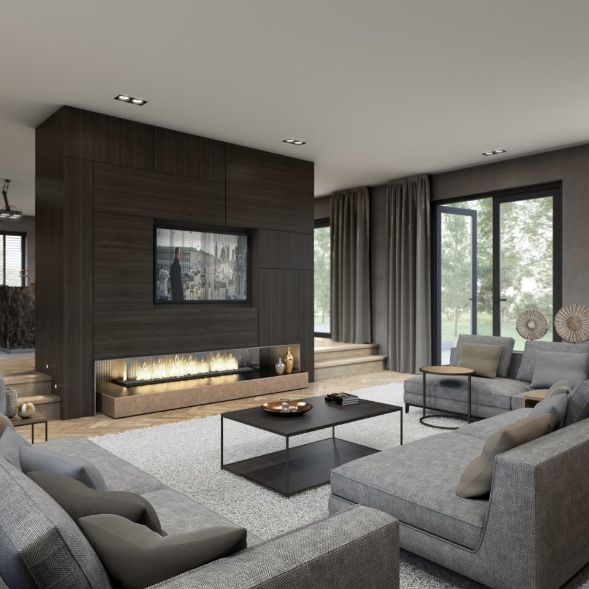
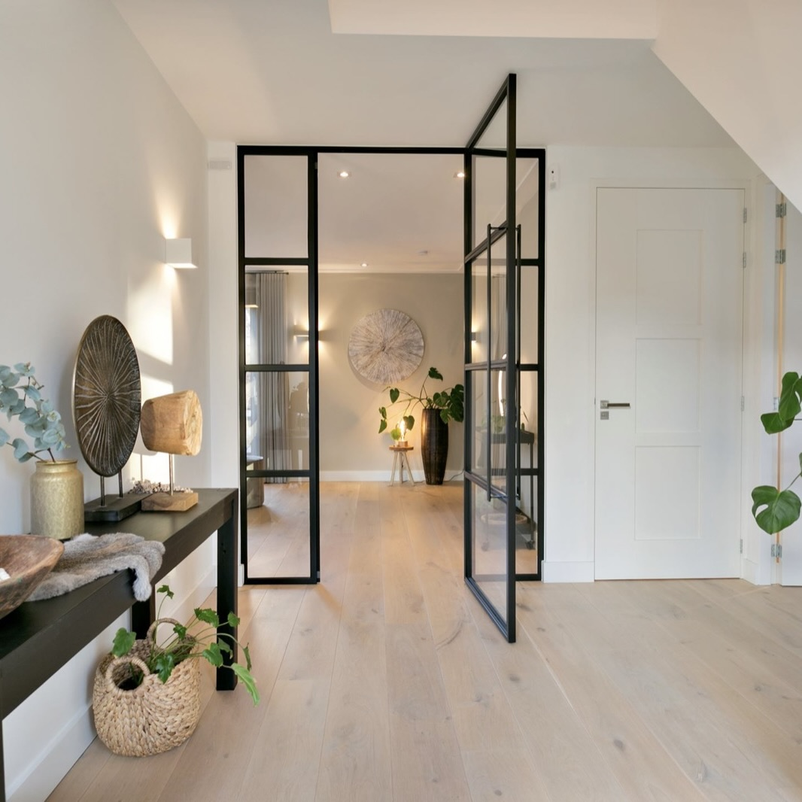
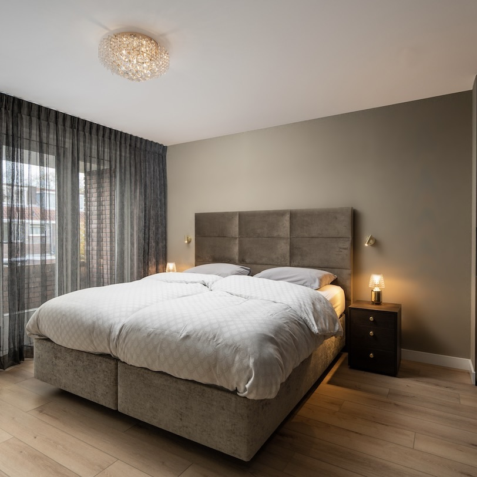
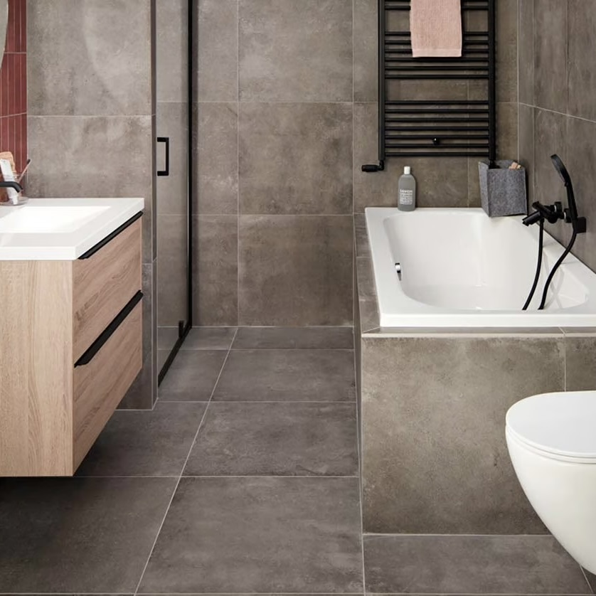
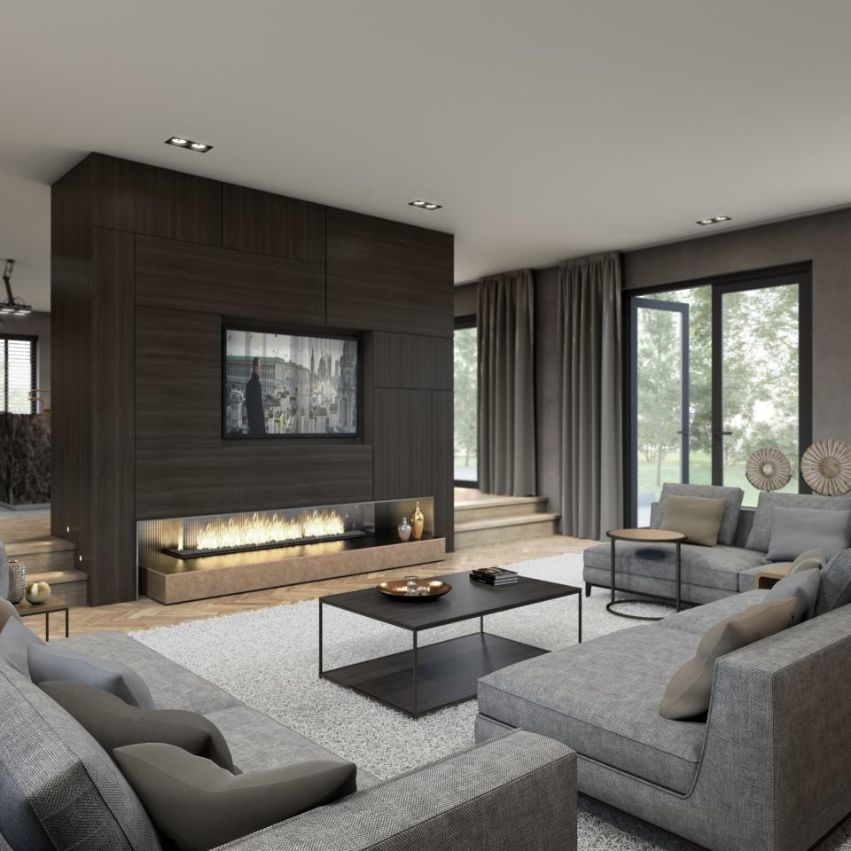
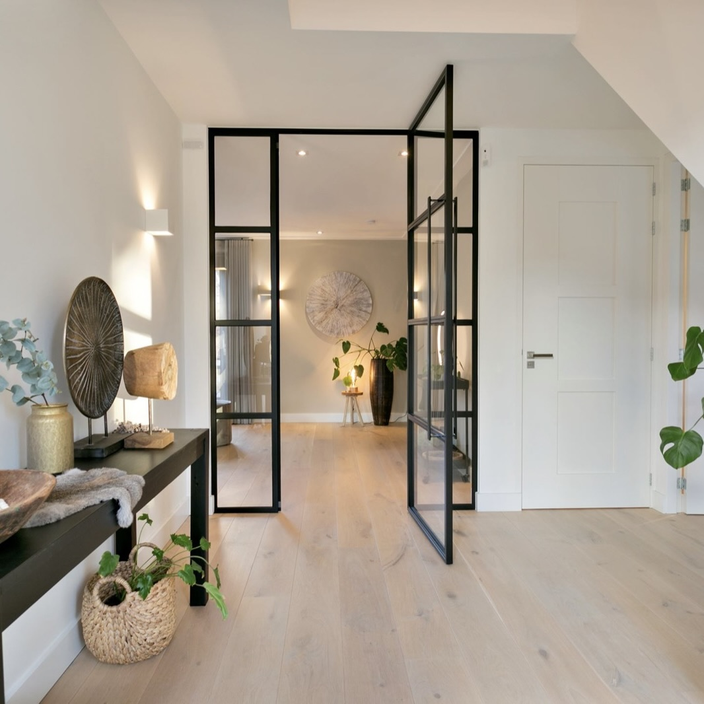
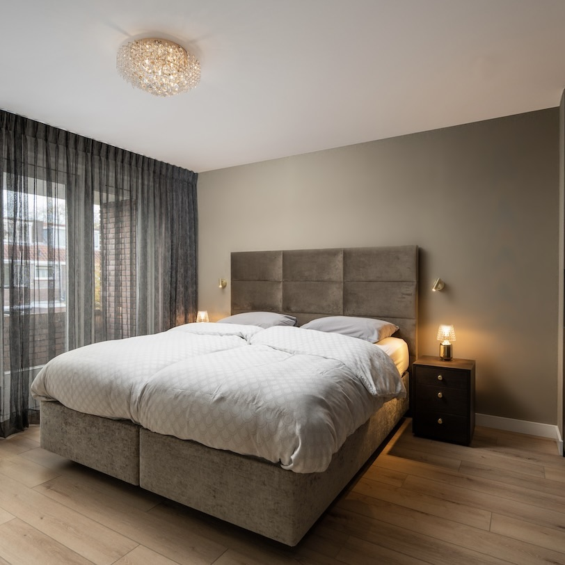
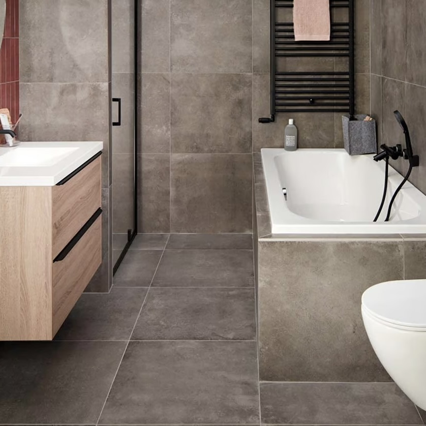

Apollolaan 11
1077 AA Amsterdam
Niewe pijp- 181 m2
- 204 m2
- 7


$3.250.000 k.k.

Omschrijving
Bent u op zoek naar een ruim vrijstaand huis met een compleet woonprogramma op de begane grond, veel sfeer, comfort en een fijne tuin? Dan bent u hier aan het juiste adres!
De oprit met grind en karakteristieke klinkerbestrating is het intro van deze compositie van kwaliteit, sfeer, comfort, ruimte en rust. De basis van haar kwaliteiten zit hem in het feit dat de woning in 2015 geheel is gerenoveerd.
Het gebruik van hoogwaardige materialen voor de sanitaire ruimten en de luxe afwerking van vloeren en wanden is daar debet aan. Bovendien is de combinatie van de oude boerderij met karakteristieke gebinten en de strakke afwerkingen van wanden, plafonds en vloeren een lust voor het oog.
De geloogde deuren naar de opkamer zijn een ware eyecatcher. De strakke keuken met allerhande inbouwapparatuur en kookeiland staat symbool voor deze ontmoeting van een landelijke woonboerderij met modern comfort. Ook de badkamer met inloopdouche, 2e toilet en wastafelmeubel past prima in deze ambiance.
Het riante woonoppervlak van 303 m² is ingericht zoals het hoort! Een grote woonkamer met open keuken, een lekkere werkkamer en een sfeervolle ‘opkamer’. Het is er allemaal voor jou. Ook de verdieping is nagenoeg perfect. Een leuk detail is de slaapvide bij één van de slaapkamers. De geïnstalleerde ‘barndeur’ hoort hier ook echt thuis
Aan duurzaamheid is natuurlijk ook gedacht. De aanwezigheid van de zonnepanelen bewijst dat. Bovendien is het huis volledig thermisch geïsoleerd en voorzien van vloerverwarming (Nefit H.R.). Het beschikt over een energielabel A.
Altijd al de wens gehad om een Bed & Breakfast te bezitten? Dit is je kans. De bijgebouwen lenen zich hier perfect voor. Ook deze ruimten zijn een voorbeeld van landelijke allure in een comfortabele en moderne jas.
Het totale gebruiksoppervlak van de bijgebouwen is 94 m² en zonder meer fors te noemen. De beoogde functies zijn legio. Ook bedrijf aan huis of wellicht de mogelijkheid voor mantelzorg behoren daartoe.